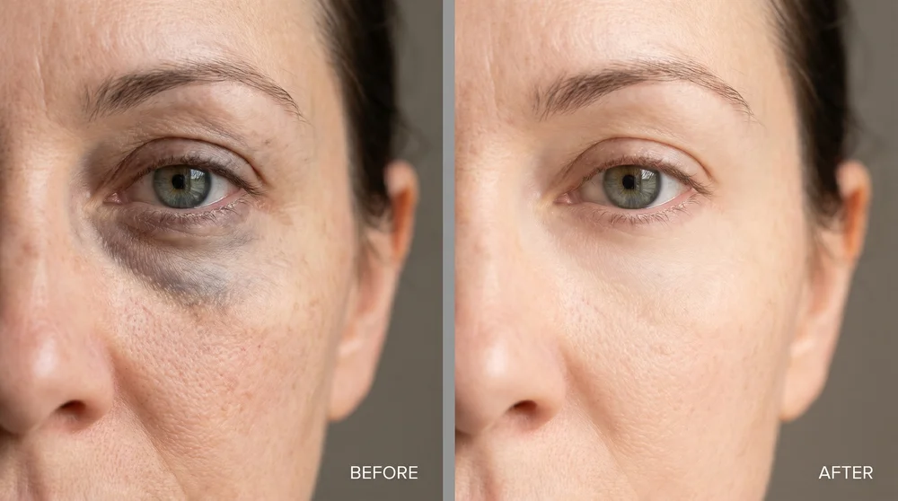
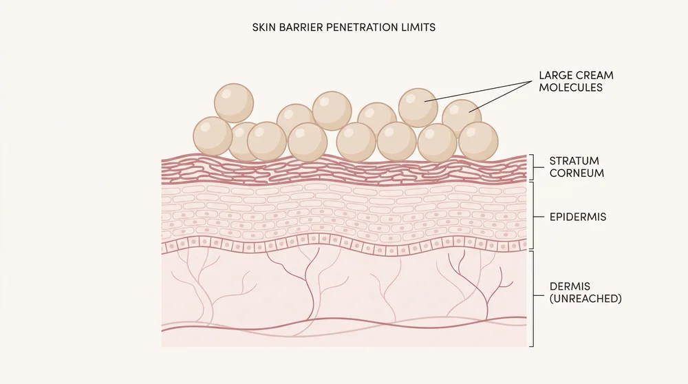
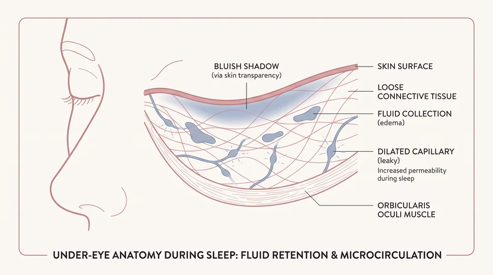
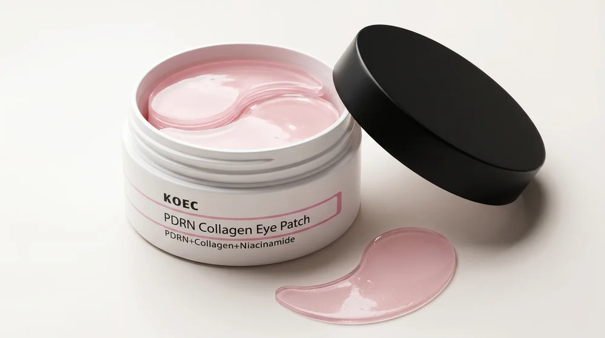

Dermatology · Skin Science
How Two Mistakes Are Aging Your Eyes Faster Than the Rest of Your Face
And Why Smart, Successful Women Are The Ones Making Both

I've written about skin for two decades.
I've interviewed dermatologists. I've read the studies most brands hope you never find.
And there's one complaint I hear more than any other.
Not wrinkles. Not sagging.
Under-eye bags.
The dark shadows. The morning puffiness. The hollow, tired look that shows up on every video call no matter how much sleep you got.
It's the thing women notice first in the mirror. And the thing they hate most in photos.
And here's what almost no one will tell you:
Your under-eyes don't behave like the rest of your face. They follow their own rules.
And worst of all — nothing you've tried has ever really fixed them.
The eye creams. The cooling rollers. The hydrogel patches that slid down your cheek. The $150 serum in the heavy glass jar.
If any of them had worked, you wouldn't be here.
Reading yet another article about how to freshen up your eye area.
But if you've been through this cycle…
Spending your hard earned money, getting your hopes up, just to end up disappointed…
Then I need you to hear something.
It's not your fault.
You've been trying to solve the right problem with the wrong approach.
And there are two specific mistakes responsible for keeping those eyebags from disappearing…
Mistake #1: You're Putting Cream On Top Of A Problem That Lives Underneath

This is the big one.
And it's the reason the entire eye cream industry has quietly been failing you.
There's a rule in skincare science. It's called the 500-Dalton Rule.
A Dalton is just how much a molecule weighs.
And the rule is simple: for an ingredient to actually pass through your skin and reach the living tissue underneath, it has to weigh less than 500 Daltons.
Bigger than that? It can't get in. Physically. It sits on the surface, does a little temporary hydrating, and rinses off in the shower.
Now here's the uncomfortable part.
Almost every eye cream on the market — including the expensive ones — is built on heavy molecules that weigh thousands of Daltons.
Thousands.
They were never going to reach the place where your under-eye structure actually lives. Not because they're cheap. Because of physics.
It's a couch trying to fit through a mail slot.
So every single morning, you've been treating the roof… while the basement keeps flooding.
That's mistake number one.
Mistake number two is the one that explains why this got so much worse in your forties.
Mistake #2: You're Asking Exhausted Cells To Rebuild — With No Fuel Left
This is the one that breaks my heart...
This woman wrote me a physical letter. By hand. Stamp and everything:
"I've tried eye products from A to Z... From expensive to super expensive... But none of them seem to work!"
Then a picture of her.
And her face... She just felt so defeated. Like nothing was built for her, and that others who tried the same thing just got lucky.
She started to give up. Accept that her "golden days" were over.
But here's what she doesn't realize:
The cells under your eyes are tired. Not figuratively. Literally.
Repairing skin from scratch takes energy. A lot of it.
And here's where that energy went.
The blue light from your screen late at night delays your sleep hormone by up to 90 minutes. So your body never fully powers down on schedule. The stress hormone that's supposed to fall at night stays high instead.
And high nighttime stress hormone does one specific thing: it makes the tiny vessels under your eyes leaky.
So while you sleep — flat, still, nothing moving the fluid along — it leaks out and pools in the loose skin under your eyes.
That's your morning bag.
Layer on years of short sleep, and the collagen drop-off that starts in perimenopause, and those repair cells simply run out of fuel.
So even the rare ingredient that does get in arrives and asks an exhausted cell to build something from nothing.
And the cell just… can't.
It's like handing flour and a sack of wheat to someone who hasn't slept in three days and asking them to bake bread from scratch. They have the instructions. They don't have the energy.
That's mistake number two. Every eye cream you've tried is shouting repair instructions at cells that have no fuel to follow them. And none of them can drain the fluid that's already pooled there.
The good news? None of this is permanent. The cells can be re-fueled. The fluid can be drained. You just need something that does both. And no cream on Earth can.

"Every eye cream you've tried is shouting repair instructions at cells that have no fuel to follow them."
So What Actually Reaches Under-Eye Skin?
I went looking for the answer for a long time.
And I didn't find it in the beauty aisle.
I found it in hospital burn units.
It's called PDRN.
In plain terms: purified DNA fragments, from salmon, that are close enough to ours that our cells recognize them and use them.
For decades, regenerative medicine has used PDRN to heal the hard cases — burns, skin grafts, even diabetic foot ulcers that wouldn't close. Tissue too damaged and too exhausted to heal on its own.
Here's why it works where creams can't.
Instead of asking a tired cell to build repair material from scratch, PDRN hands the cell the parts pre-made.
Scientists call it the Salvage Pathway.
The cell doesn't have to find the energy. It just gets handed the dough, ready to bake. It repairs. It just doesn't have to fight for the fuel to do it.
And when PDRN is paired with a special "pink collagen" engineered small enough — between 100 and 243 Daltons — it slips right past that 500-Dalton barrier.
It actually gets in.
For the first time, I was looking at something that didn't sit on the roof.
It went into the building.
But There Was Still One Problem…
Signaling repair is wonderful.
But it doesn't drain a swamp.
The fluid that's already pooled under your eyes has to physically go somewhere — pushed back into your lymphatic system, where it belongs.
A serum can't do that.
A patch can.
A non-slip hydrogel patch does two jobs at the exact same time.
It carries the PDRN and the tiny collagen into the skin… and its own gentle weight presses the pooled fluid out.
The cooling makes the dark vessels constrict, which clears the shadow.
In. And out. At once. Hands-free, while you do everything else.
That's the whole reason it had to be a patch — not another cream.
Introducing Rejouva — The Under-Eye Patch That Treats The Cause, Not The Surface

Here's exactly what makes Rejouva different.
Ingredient 01
PDRN (Salmon Polynucleotides) — the fuel
Purified to over 95%. This is the part that re-energizes tired cells through the Salvage Pathway, so they can finally repair the structure that's been breaking down. It's the same class of ingredient regenerative clinics have trusted for years. Most eye creams don't contain it. The ones that do can't get it deep enough to matter.
Ingredient 02
Pink Collagen (100–243 Daltons) — the part that actually gets in
Engineered small enough to pass the 500-Dalton barrier, where it signals your skin to rebuild its own collagen — up to a 184% increase in dermal density. Not sitting on top. Underneath. Where the problem lives.
The Delivery System
The Hydrogel Patch Itself — the drain
This is the piece no cream can replicate. Gentle, continuous compression pushes the pooled morning fluid out of the tissue. Evaporative cooling clears the dark vascular shadow. The bag drains while the repair happens. A high-grip, non-slip design locks onto your cheekbone so you can pack lunches, answer emails, and get ready — completely hands-free. No lying flat for 20 minutes. No sliding. No flaking. No pilling under your concealer.
"But Wait — Salmon DNA? Near My Eyes?"
I had the same reaction. So let me be clear about this.
If you've ever tried a retinol or high-dose vitamin C patch, you might know the feeling — the redness, the stinging, the burning across thin under-eye skin within minutes. Some women have had that happen on the worst possible morning.
PDRN is the opposite of that.
It's purified to over 95%, and it's free of the active proteins and peptides that trigger those reactions. That's what makes it biocompatible. No stinging. No burning. No harsh retinol.
It's not a chemical your skin has to tolerate. It's a building block your skin already recognizes.
Here's The Best Part
You don't need a 10-step routine.
You press the patches on. You do your morning — coffee, emails, getting the kids out the door. You peel them off.
Done. Less than your shower takes.
Just the two things your under-eyes have actually needed this whole time
The repair signal — in.
The trapped fluid — out.
If You're Over 45 And Your Under-Eyes Look Tired No Matter What You Do — This Is For You
It doesn't matter how little you sleep.
It doesn't matter how many creams have already let you down.
It doesn't matter whether your bags are "genetic," hormonal, or just twenty years of early mornings and late nights.
The mechanism is the same. And so is the fix.
I Got Rejouva To Fix My Eye Bags. What Surprised Me More Was Everything Else.
I ordered it for one reason. The bags.
To stop looking exhausted on camera when I felt fine.
And the bags did soften. By the second week my concealer stopped creasing — because it finally had a smooth base to sit on instead of a hollow to fall into.
But what happened next went further than the mirror.
"There's a woman on my team who used to ask me, almost every week: 'Are you doing okay? You look tired.' She meant well. It made me feel small every single time. And one week, I realized she'd stopped asking."
A few weeks after that, I noticed I'd stopped turning on the "touch up my appearance" filter before calls. I stopped angling my face away from the webcam. I caught my reflection on a Zoom waiting screen — overhead lighting, no makeup yet — and didn't flinch.
That's the part that gets me, still.
Nobody said "you look younger." Nobody complimented my skin.
The comments just… stopped.
And that quiet — the absence of that one humiliating question — was the thing I'd actually wanted the whole time.
I wasn't sleeping more. I just didn't look like the tiredness was winning anymore.
That was the moment I knew this was different.
Try Rejouva For Yourself — At Zero Risk
Rejouva comes with a 30-day money-back guarantee. Wear the patches through your morning routine. If your under-eyes aren't visibly less puffy, less shadowed, and easier to work with — send it back. You pay nothing. No empty-jar nonsense. No fine print.
Rejouva is made in small, sealed batches — specifically to keep the PDRN active. When one's gone, the next is weeks out. If it's in stock now, get it now.
Trial · 1 jar
$158
$79
Restore · 3 jars
$354
$177
Renew · 6 jars
$588
$294
30-day money-back guarantee · Free express shipping on 3+ jars
Every morning you spend pressing concealer into a crease, the tissue underneath gets a little thinner. The pooling gets a little more practiced. The shadow gets a little more permanent. This doesn't hold still while you decide. It compounds. You've already spent years treating the roof. Try treating the building.